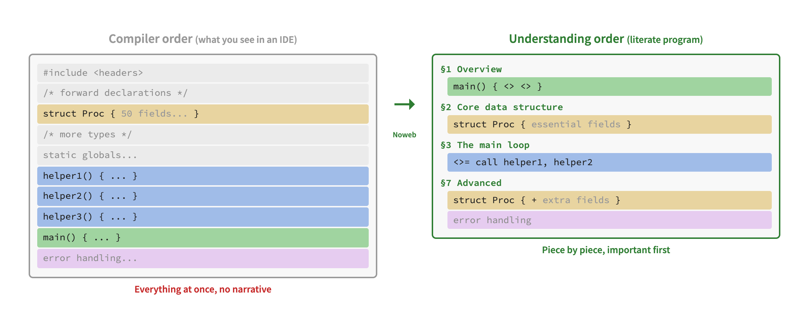
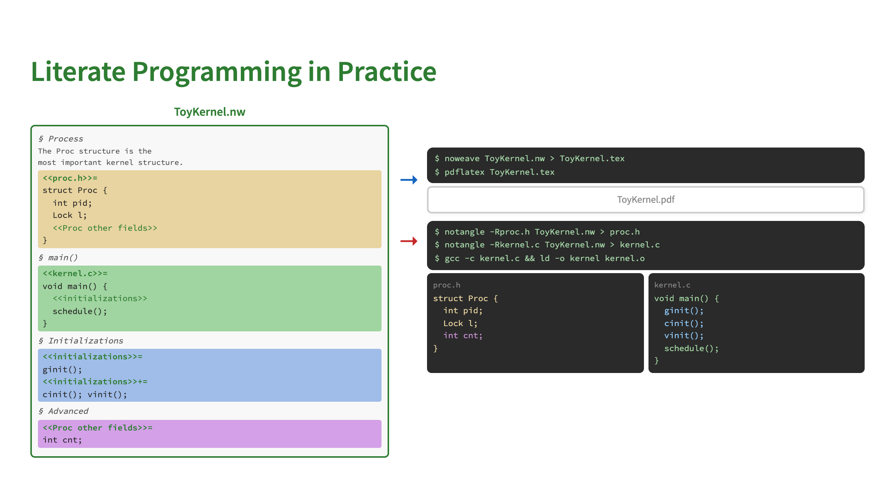
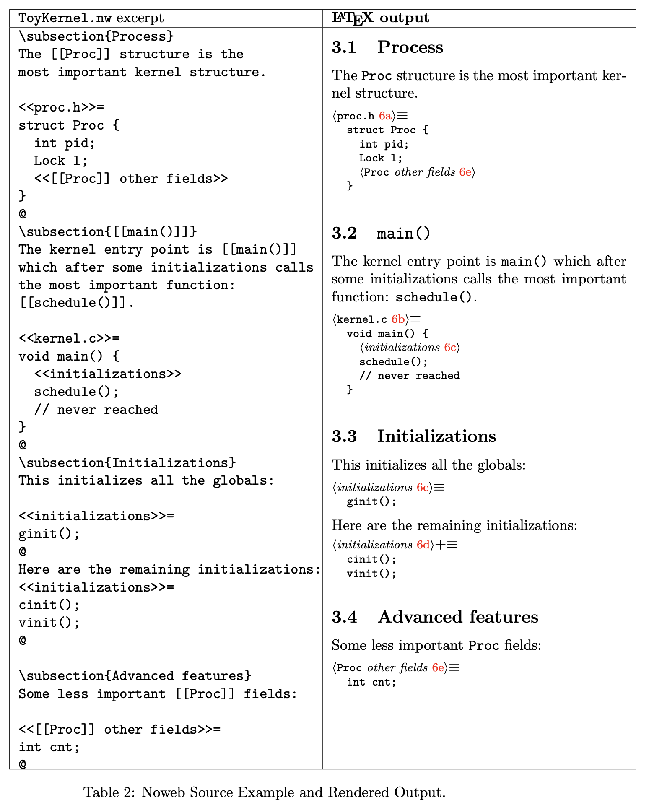
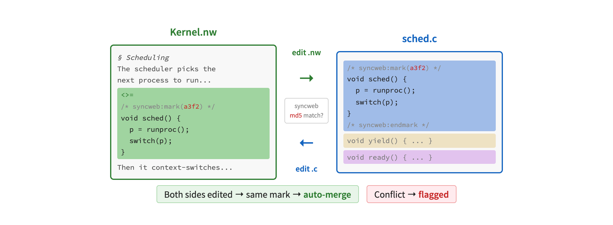

Literate programming was invented by Donald Knuth in 1984. The key idea is simple: instead of writing code in the order the compiler demands, you write it in the order a human would want to read it. Code and documentation live together in a single source file, and tools extract either the book or the compilable code from it.
In a normal source file, you see everything at once in the order
the compiler requires: includes, forward declarations, types,
helpers, then finally main() at the bottom.
There is no narrative.
In a literate program, the code is reorganized into sections that tell a story. You start with the overview, introduce the core data structures, explain the main loop, and defer advanced features and error handling to later chapters. Each piece of code is presented when the reader is ready for it.

A literate program is stored in a .nw file (Noweb format).
Two tools process it:
.c and .h files that are compiled normally.The same source produces both the book and the working program.

Here is a concrete example from a toy kernel.
On the left is the Noweb source (ToyKernel.nw),
mixing documentation sections with named code chunks
(<<proc.h>>=, <<kernel.c>>=).
On the right is the typeset LaTeX output: a readable document
with numbered sections, cross-references, and properly formatted code.

Classic Noweb is one-way: you edit the .nw file and
extract code from it. This is the biggest practical complaint about
literate programming — you cannot use your normal IDE or
debugger workflow on the extracted code, because changes would be
lost on the next extraction.
Syncweb solves this
by making the process bidirectional. It places MD5 checksums in both
the .nw file and the extracted source files, so it can
detect which side changed and automatically merge edits back.
You can edit either the book or the code, and syncweb keeps them
in sync.
